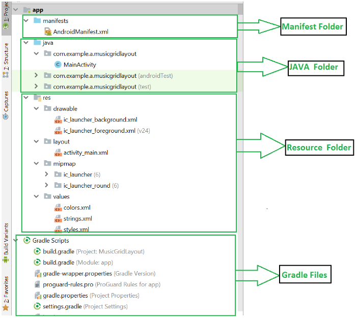
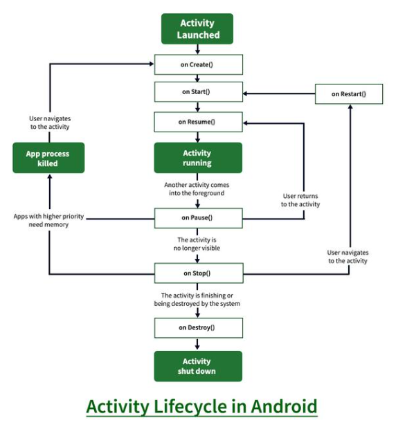

What is Mobile App Development?
Mobile application development is the process to making software for smartphones and digital assistants, most commonly for Android and iOS. The software can be preinstalled on the device, downloaded from a mobile app store or accessed through a mobile web browser. The programming and markup languages used for this kind of software development include Java, Swift, C# and HTML5.
1. Andriod Programming Languages
In Android, basically, programming is done in two languages JAVA or C++ and XML(Extension Markup Language). Nowadays KOTLIN is also preferred. The XML file deals with the design, presentation, layouts, blueprint, etc (as a front-end) while the JAVA or KOTLIN deals with the working of buttons, variables, storing, etc (as a back-end).
2. Android Components
The App components are the building blocks of Android. Each component has its own role and life cycles i.e from launching of an app till the end. Some of these components depend upon others also. Each component has a definite purpose. The four major app components are:
- Activities
- Services
- Broadcast Receivers
- Content Receivers
Activities: It deals with the UI and the user interactions to the screen. In other words, it is a User Interface that contains activities. These can be one or more depending upon the App. It starts when the application is launched. At least one activity is always present which is known as MainActivity. The activity is implemented through the following.
Services: Services are the background actions performed by the app, these might be long-running operations like a user playing music while surfing the Internet. A service might need other sub-services so as to perform specific tasks. The main purpose of the Services is to provide non-stop working of the app without breaking any interaction with the user.
Syntax:
Broadcast Receivers: A Broadcast is used to respond to messages from other applications or from the System. For example, when the battery of the phone is low, then the Android OS fires a Broadcasting message to launch the Battery Saver function or app, after receiving the message the appropriate action is taken by the app. Broadcast Receiver is the subclass of BroadcastReceiver class and each object is represented by Intent objects.
Syntax:
Content Provider: Content Provider is used to transferring the data from one application to the others at the request of the other application. These are handled by the class ContentResolver class. This class implements a set of APIs(Application Programming Interface) that enables the other applications to perform the transactions. Any Content Provider must implement the Parent Class of ContentProvider class.
Syntax:
3. Structural Layout of Android Studio
The basic structural layout of Android Studio is given below:

The above figure represents the various structure of an app.
Manifest Folder: Android Manifest is an XML file that is the root of the project source set. It describes the essential information about the app and the Android build tools, the Android Operating System, and Google Play. It contains the permission that an app might need in order to perform a specific task. It also contains the Hardware and the Software features of the app, which determines the compatibility of an app on the Play Store. It also includes special activities like services, broadcast receiver, content providers, package name, etc.
Java Folder: The JAVA folder consists of the java files that are required to perform the background task of the app. It consists of the functionality of the buttons, calculation, storing, variables, toast(small popup message), programming function, etc. The number of these files depends upon the type of activities created.
Gradle Files: Gradle is an advanced toolkit, which is used to manage the build process, that allows defining the flexible custom build configurations. Each build configuration can define its own set of code and resources while reusing the parts common to all versions of your app. The Android plugin for Gradle works with the build toolkit to provide processes and configurable settings that are specific to building and testing Android applications. Gradle and the Android plugin run independently of Android Studio. This means that you can build your Android apps from within Android Studio. The flexibility of the Android build system enables you to perform custom build configurations without modifying your app’s core source files.
Basic Layout Can be defined in a tree structure as:
4. Lifecycle of Acivity in Android App
The Lifecycle of Activity in Android App can be shown through this diagram:

States of Android Lifecycle:
- OnCreate: This is called when activity is first created.
- OnStart: This is called when the activity becomes visible to the user.
- OnResume: This is called when the activity starts to interact with the user.
- OnPause: This is called when activity is not visible to the user.
- OnStop: This is called when activity is no longer visible.
- OnRestart: This is called when activity is stopped, and restarted again.